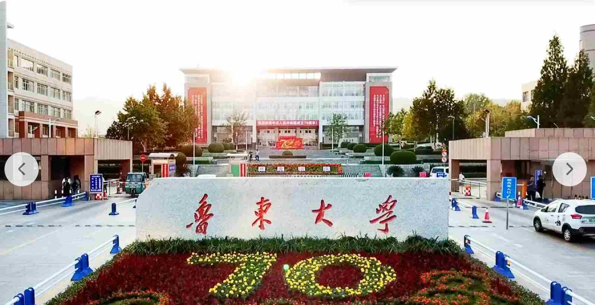

鲁东大学的春天，是从一场温柔的风开始的。当东风拂过黄海之滨，整座校园便从冬日的沉静里苏醒，晕开了满目的生机与温柔。走进校园，最先撞入眼帘的是主干道旁的法桐与樱花。三月末的樱花大道是鲁东大学最动人的名片，粉白的樱花缀满枝头，如云似霞，风一吹，花瓣便簌簌落下，铺成一条浪漫的花径。阳光透过花瓣的缝隙洒下来，在地面投下细碎的光影，走在其中，仿佛踏入了春日的童话。不远处的迎春、连翘也不甘示弱，明黄的花朵缀满枝条，像一串串小太阳，把校园的角落都点亮了。湖边的垂柳抽出了嫩黄的新芽，柔软的枝条垂在水面上，风过处，柳丝轻摇，搅碎了湖面的倒影，也搅乱了春日的温柔。
校园里的湖泊与绿地，是春日里最治愈的角落。镜湖的冰早已消融，湖水澄澈如镜，倒映着蓝天、白云与岸边的花树。野鸭在水面上自在游弋，偶尔扎进水里，激起一圈圈涟漪，给静谧的湖面添了几分灵动。湖边的草坪褪去了枯黄，冒出了鲜嫩的绿意，星星点点的二月兰、紫花地丁在草丛间绽放，紫的、白的、黄的小花，把绿地织成了一块彩色的绒毯。清晨时分，薄雾还未散去，校园里弥漫着青草与泥土的芬芳，晨读的学子坐在湖边的石凳上，琅琅书声伴着鸟鸣，成了春日里最动听的旋律。午后的阳光温暖而不灼热，学子们三三两两坐在草坪上，或看书，或闲谈，或晒着太阳打盹，把春日的慵懒与惬意，都揉进了鲁大的时光里。
春日的鲁大，连空气里都带着清甜的气息。图书馆前的玉兰花次第绽放，洁白的、淡紫的花朵亭亭玉立，在阳光下散发着淡淡的幽香；宿舍楼旁的海棠花满树繁华，粉艳的花瓣层层叠叠，开得热烈而张扬；实验楼后的丁香花也悄然绽放，细碎的紫花缀满枝头，浓郁的香气弥漫在空气里，走过的人都忍不住驻足深吸。春日的鲁大，是一步一景，一景一诗，每一处角落都藏着春天的惊喜，每一缕风里都裹着青春的气息，让每一个身处其中的人，都能感受到生命的蓬勃与美好。
